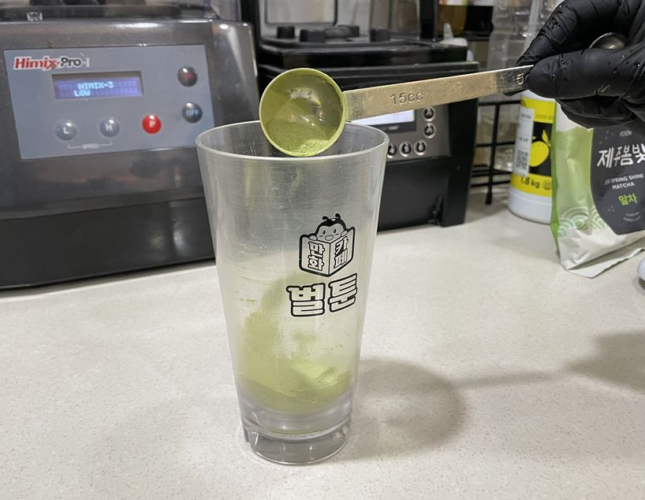
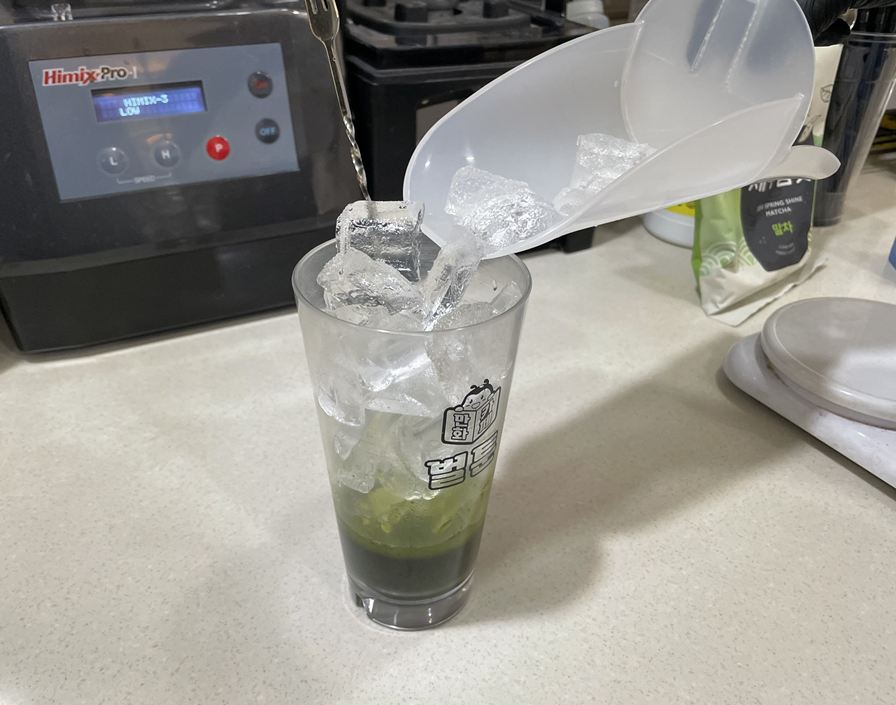
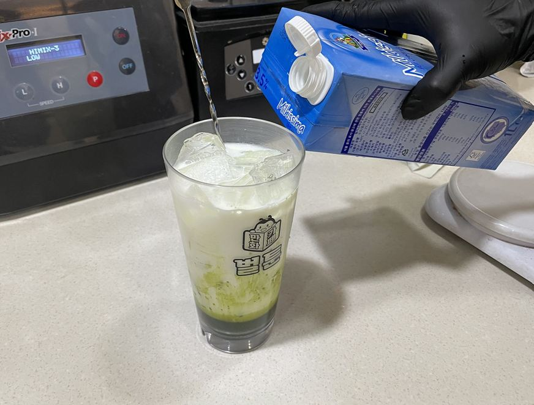
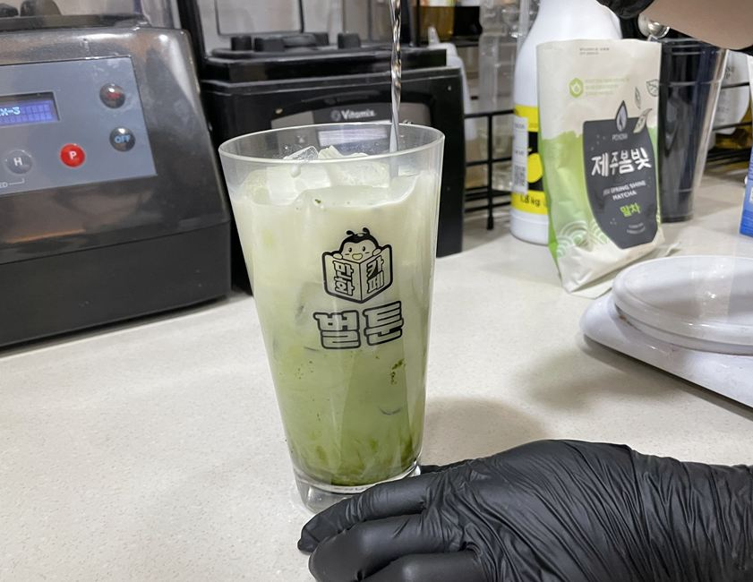
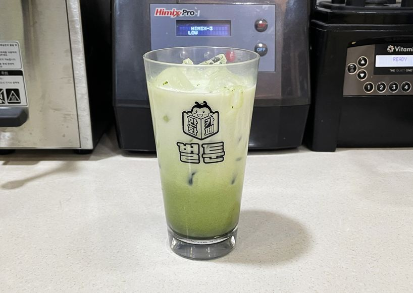
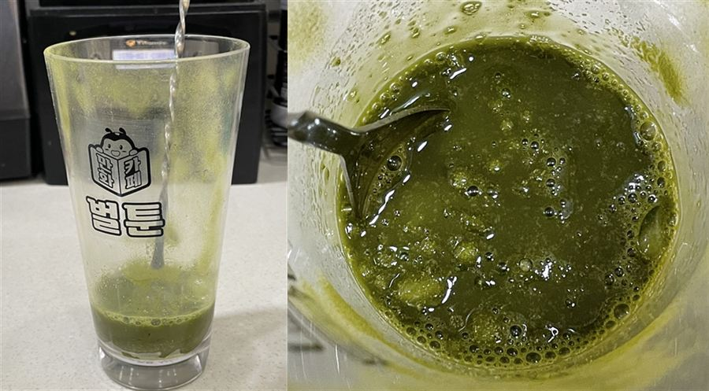

| 메뉴명 | 말차라떼 ICE |
|---|---|
| 판매가격 | 5,000원 |
| 원재료 | 말차파우더, 우유, 얼음, 뜨거운물 |
| 사용 부자재 | 16oz 아이스컵, 리드뚜껑, 빨대 |
※ 픽업 멘트 : "섞어서 드세요"
제조방법

1
16온스 컵에 말차파우더 2T(34g)을 넣는다.
16온스 컵에 말차파우더 2T(34g)을 넣는다.

2
뜨거운물 약 20g을 넣고 파우더가 섞이도록 바스푼을 사용해 저어준다.
뜨거운물 약 20g을 넣고 파우더가 섞이도록 바스푼을 사용해 저어준다.

3
얼음을 가득 담아준다.
얼음을 가득 담아준다.

4
차가운 우유 200g을 부어준다.
차가운 우유 200g을 부어준다.

5
바스푼으로 아랫쪽만 섞어서 자연스럽게 그라데이션을 만들어준다.
바스푼으로 아랫쪽만 섞어서 자연스럽게 그라데이션을 만들어준다.

6
완성!! 평리드 뚜껑을 덮고 빨대와 함께 제공한다.
(※일회용컵 사용 시, 홀더 끼워 제공)
완성!! 평리드 뚜껑을 덮고 빨대와 함께 제공한다.
(※일회용컵 사용 시, 홀더 끼워 제공)
※ 제조 팁! - 얼음을 먼저 넣고 우유를 부어 주어야 그라데이션이 예쁘게 나온다.